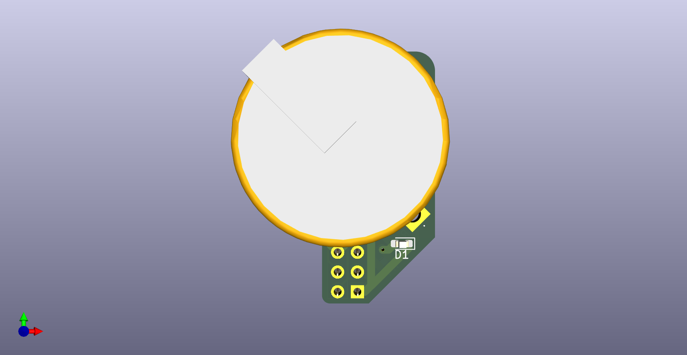
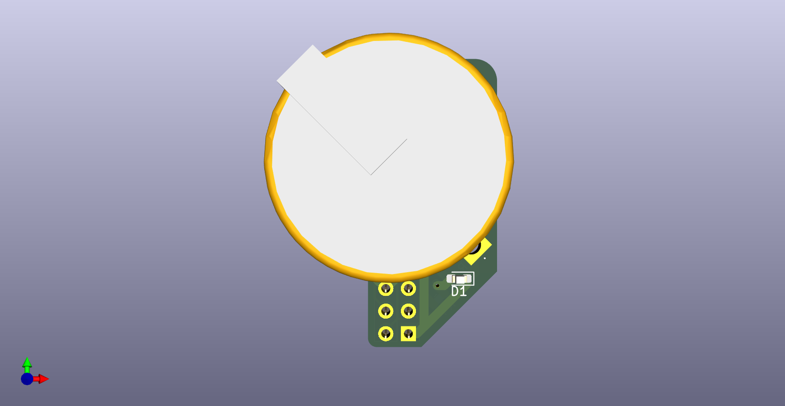

Overview
Real-time clock board using PCF8563 and a 5 Farad double layer supercapactior to correct the internal clock of the robot's Jetson Orin Nano when it is not connected to internet and a power source. Designed in KiCad.



Real-time clock board using PCF8563 and a 5 Farad double layer supercapactior to correct the internal clock of the robot's Jetson Orin Nano when it is not connected to internet and a power source. Designed in KiCad.
